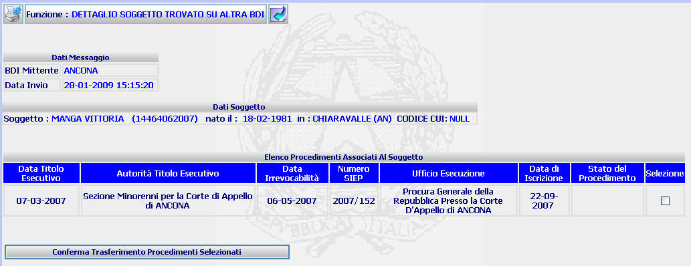

DETTAGLIO SOGGETTO TROVATO SU ALTRA BDI: La funzione consente di visualizzare il dettaglio del soggetto trovato su altra BDI e dei procedimenti associati allo stesso, al fine di procedere al trasferimento del titolo (o dei titoli) interessati nella Banca Dati di appartenenza.
LE MASCHERE VIDEO
La funzione viene realizzata attraverso la maschera seguente

COME FARE PER ...
| Per trasferire il procedimento (o i procedimenti) Siep selezionato/i relativo a Procure di altro Distretto nella propria banca dati, l'utente deve: |
|
Per
tornare alla maschera precedente l'utente
deve selezionare il pulsante
|
PULSANTI
Sono
presenti i
pulsanti
 e
e
 facenti parte del gruppo di
pulsanti di "Uso Comune"
facenti parte del gruppo di
pulsanti di "Uso Comune"
BOTTONI
Oltre ai comandi funzionali relativi al menù verticale sono presenti i seguenti bottoni:
|
COMANDI |
DESCRIZIONE |
|
|
Attraverso questo comando l'utente trasferire il procedimento (o i procedimenti) Siep selezionato/i relativo a Procure di altro Distretto nella propria banca dati. |